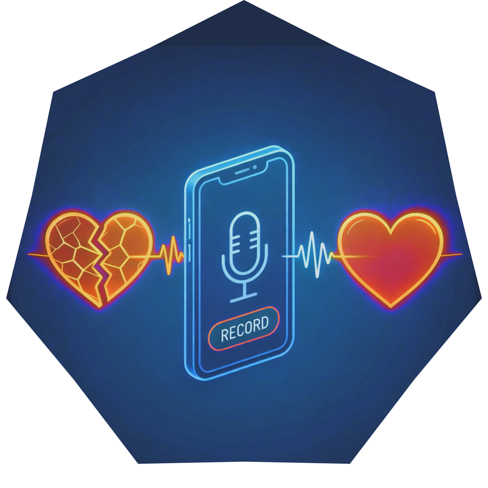
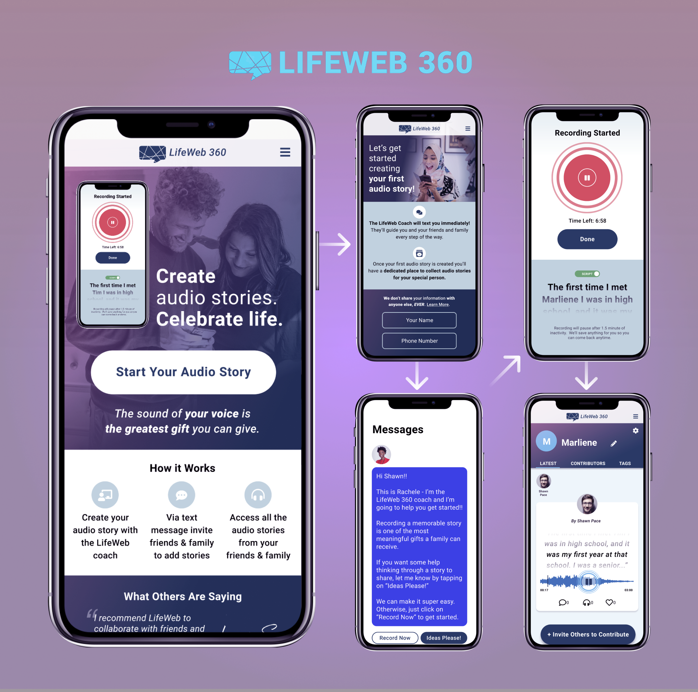
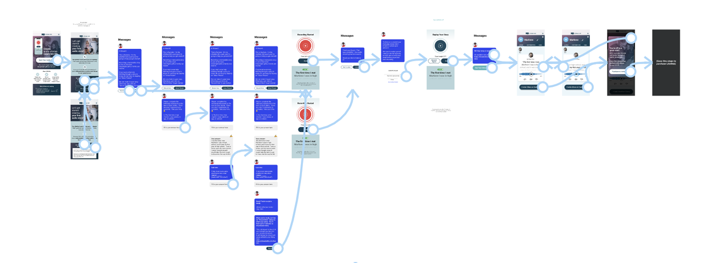

Up NextSiguiente
Explore Another Case Study:Explora otro caso de estudio:

-
UX & UXR LeadUX y UXR líder
-
Design SystemSistema de diseño

LifeWeb360's founding team had an idea, but no validated product direction. Their vision was to create a social platform to help people grieve by collaboratively honoring the memory of a loved one.El equipo fundador de LifeWeb360 tenía una idea, pero no una dirección de producto validada. Su visión era crear una plataforma social que ayudara a las personas a vivir su duelo mediante la conmemoración colaborativa de un ser querido.
Grief is deeply personal, yet also communal. The COVID-19 pandemic made traditional mourning rituals difficult or impossible, creating a need for digital ways to collectively remember and honor loved ones.El duelo es profundamente personal, pero también comunitario. La pandemia de COVID-19 dificultó o incluso imposibilitó los rituales tradicionales de despedida, generando la necesidad de formas digitales para recordar y honrar colectivamente a los seres queridos.
This project required balancing innovation with empathy—creating a platform that felt supportive, not exploitative. Understanding user needs meant approaching conversations with care and building trust through thoughtful design decisions.Este proyecto requería equilibrar innovación con empatía — creando una plataforma que se sintiera solidaria y respetuosa, no oportunista. Comprender las necesidades de los usuarios implicó abordar las conversaciones con cuidado y generar confianza a través de decisiones de diseño reflexivas.
I planned and conducted in-depth user interviews with individuals who had recently experienced loss. These conversations helped us understand how people naturally share memories, what felt meaningful, and what privacy concerns they had around digital memorials.Planifiqué y realicé entrevistas en profundidad con personas que habían experimentado una pérdida recientemente. Estas conversaciones nos ayudaron a comprender cómo las personas comparten recuerdos de forma natural, qué les resultaba significativo y cuáles eran sus inquietudes sobre la privacidad en memoriales digitales.
Based on research insights, I developed early concepts and user flows in Figma. The core innovation—collaborative audio memory sharing—emerged as a key differentiator. I created interactive prototypes to test this concept with real users before committing to development.Con base en los hallazgos de la investigación, desarrollé conceptos iniciales y flujos de usuario en Figma. La innovación central — el intercambio colaborativo de recuerdos en formato de audio — surgió como un diferenciador clave. Creé prototipos interactivos para probar este concepto con usuarios reales antes de comprometer recursos de desarrollo.


Complete user flow and key screens for the LifeWeb360 mobile appFlujo de usuario completo y pantallas clave para la aplicación móvil de LifeWeb360
Moderated usability tests with interactive Figma prototypes to validate the audio recording flow, privacy controls, and memorial creation process.Pruebas de usabilidad moderadas con prototipos interactivos en Figma para validar el flujo de grabación de audio, los controles de privacidad y el proceso de creación de memoriales.
User feedback helped shape critical features around sharing controls and permissions, ensuring people felt safe and in control of sensitive memorial content.La retroalimentación de los usuarios ayudó a definir funciones críticas relacionadas con los controles de compartición y permisos, asegurando que las personas se sintieran seguras y con control sobre contenido conmemorativo sensible.
Tested different approaches to multi-user contribution, exploring how family members and friends could add memories while maintaining a cohesive memorial experience.Probamos distintos enfoques para la contribución multiusuario, explorando cómo familiares y amigos podían añadir recuerdos manteniendo una experiencia de memorial coherente y respetuosa.
Validated interest in collaborative, audio-based memory sharing through user researchValidamos el interés en el intercambio colaborativo de recuerdos en formato de audio mediante investigación con usuarios.
Research shaped key features around sharing controls and privacy settingsLa investigación orientó funciones clave relacionadas con controles de compartición y configuraciones de privacidad.
Delivered a tested prototype for internal buy-in and investor pitchesEntregamos un prototipo probado para lograr alineación interna y presentaciones ante inversionistas.